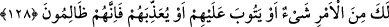
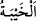

Bu âyet-i kerîme, müslümanların zafere ulaşırken, hiçbir yardıma muhtaç
olmadıklarına dikkat çekmektedir.
Cenâb-ı Mevlâ’nın, bu yardımı sırf müslümanlara müjde olsun ve kalpleri güven
bulsun diye yapmasının sebebi, halkın olayları, genelde sebeplere bağlamasıdır. Bu
durumda mü’mine düşen; sebeplere en ufak bir şekilde bile meyletmemektir. Çünkü
zaferin, zâhiri sebeplerin mevcûdiyeti ile kazanılması sadece, normalde öyle olageldiği
içindir.
127, 128. Allah, kâfirlerden bir kısmının kökünü kessin veya onları perişan etsin,
böylece bozulmuş bir halde dönüp gitsinler -ki bu işte senin yapacağın bir şey
yoktur- yahut (müslüman olsunlar da) tevbelerini kabul etsin, ya da (ısrar
ederlerse) onlara azap etsin diye (Allah Bedir’de size yardım etti). Çünkü onlar
zâlimlerdir.
Allah size Bedir günü, bir grup kâfiri helâk etmek ve esir etmek sûretiyle azaltmak
için yardım etmişti, demektir.
Bu helâk, o gün vukû bulmuştur, zira reislerinden ve nüfuz sahibi müşriklerden yetmiş
tanesi esir edilmiş, yetmiş tanesi de öldürülmüştü.
“Veya” müşrikleri “perişan etsin de” rezîl edip, hezîmete uğratmak sûretiyle içlerini
gayz doldursun diye yardım etti.
“Perişan etmek” diye isimlendirilen ( __WORD__ ) şiddetli gayz ve kalpteki zaaftır.
Bu kelime, insanın bir kişinin ciğerine gayz ve kin ile vurduğu zaman kullanılan ( __WORD__ )
kelimesi ile aynı anlamdadır.
“Umutsuz olarak dönüp gitsinler.” Elde etmek istediklerine kavuşamadan, ümidsiz
bir halde hezimete uğrasınlar diye size yardım etti.
( __WORD__ ): İstenen şeyden mahrûm kalmak demektir. Haybet ile ye’s arasındaki fark;
haybetin, istenen şeyi elde etmeyi bekledikten sonra; ye’sin ise, elde etmeyi beklemeden
önce de sonra da vukû bulabilmesidir. Ye’sin zıddı, recâ; haybetin zıddı, zaferdir.
Âyetin mânası şudur: Genel anlamda müşriklerin işleri Allah’ın elindedir. Ya helâk
eder; ya perişan eder, ya da müslüman olurlarsa tevbelerini kabul edip affeder; yahut
küfürlerinde ısrar ederlerse şiddetli bir âhiret azabı ile azap eder. Onların işlerinde sen
hiçbir şeye mâlik değilsin. Sen, yalnızca onları uyarmak ve onlarla cihad etmekle
memur bir kulsun.